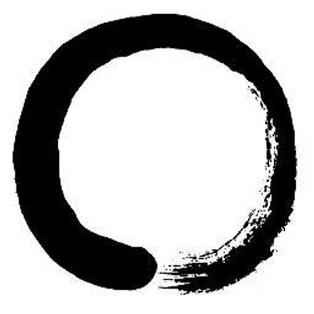

 People say that practicing Zen is difficult, but there is a misunderstanding as to why. It is not difficult because it is hard to sit in the cross-legged position, or to attain enlightenment. It is difficult because it is hard to keep our mind pure or our practice pure in its fundamental sense. The Zen school developed in many ways after it was established in China, but at the same time, it became more and more impure. But I do not want to talk about Chinese Zen or the history of Zen. I am interested in helping you keep your practice from becoming impure.
In Japan we have a phrase shoshin which means "beginner's mind". the goal of practice is always to keep our beginner's mind. Suppose you recite the Prajna Paramita Sutra only once. It might be a very good recitation. But what would happen to you if you recited it twice, three times, four times, or more? You might easily lose your original attitude towards it. The same thing will happen in your own Zen practices. For a while you will keep your beginner's mind, but if you continue to practice on, two, three years or more, although you may improve some, you are liable to lose the limitless meaning of original mind.
For Zen students the most important thing is not to be dualistic. Our "original mind" include everything within itself. it is always rich and sufficient within itself. You should not lose your self-sufficient state of mind. This does not mean a closed mind, but actually an empty mind and a ready mind. If your mind is empty, it is always ready for anything; it is open to everything. In the beginner's mind there are many possibilities; in the expert's mind there are few.
If you discriminate too much, you limit yourself. If you are too demanding or too greedy, your mind is not rich and self-sufficient. If we lose our original self-sufficient mind, we will lose all precepts. when your mind becomes demanding, when you long for something, you will end up violating your own precepts: not to tell lies, not to stea, not to kill, not to be immoral, and so forth. If you keep your original mind, the precepts will keep themselves.
In the beginner's mind there is no thought, "i have attained somehting." all self-centered thoughts limit our vast mind. when we have no thought of acheivement, no thought of self, we are true beginners. then we can really learn somehting. the beginner's mind is the mind of compassion. when our mind is compassionate, it is boundless. dogen-zenji, the founder of our school, always emphasized how importat it is to resume our boundless original mind. then we are always true to ourselves, in sympathy with all beings, and can acutally practice.
So the most difficult thing is to keep your beginner's mind. There is no need to have a deep understanding of Zen. Even though you readh much Zen literature, you must read each sentence with a fresh mind. You should not say, "I know what Zen is", or "I have attained enlightenment." This is also the real secret of the arts: always be a beginner. Be very very careful about this point. If you start to practice zazen, you will begin to appreciate your beginner's mind. It is the secret of Zen practice.
Now I would like to talk about zaen posture. When you sit in the full lotus position, your left foot is on your right thigh, and your right foot is on your left thigh. When we cross our legs like this, even though we have a right leg and a left leg, they have become one. The position expresses the oneness of duality: not two, and not one. Our body and mind are are not two and not one. If you think your body and mind are two, that is wrong; If you think your body and mind are two, that is also wrong. Our body and mind are both two and one. We usually think that if something is not one, it is more than one; if it is not singular, it is plural. But in actual experience, our life is not only plural, but also singular. Each one of us is both dependent and independent.